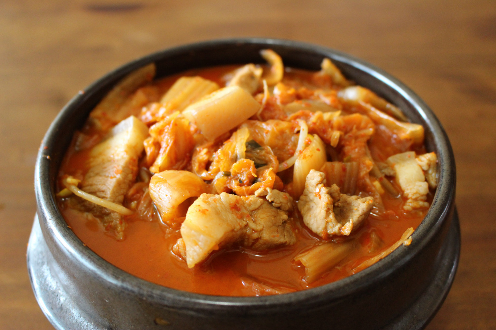

Kimchi JJigae (김치찌개)

Description
Kimchi Jjigae is a common Korean dish. The word Jjigae refers to a soup that has only a little water and is similar to the English word "stew." It is an excellent dish for any time of the year, but is especially good for the colder months, when this hearty stew can help warm you after a cold day.
Kimchi Jjigae can be made with a number of different proteins, but for this recipe we are going to use pork. Any fatty part will work. You can use pork belly if you wish, but I will be using Korean stew pork (찌개용) from the shoulder reffered to as apdarisal (앞다리살), which should be available at any Korean grocery store.
If possible, use Kimchi that you have had in the fridge for a couple weeks. The sour taste of the kimchi will take the dish to another level. Homemade varieties can take longer to sour, but store-bought kimchi can start to sour after only a week or two. Fresh kimchi will also produce a fine soup.
The Ssalddumul(쌀뜨물) listed in this recipe is water that was used to rinse rice before cooking. Think of it like Korean pasta water. It's starchy and will give your soup a better flavor and texture. Usually, I rinse my rice around 3 times and use water from the second rinsing. Just collect it in a bowl and set it aside. Don't worry if you forget this step, you can make a great stew with just tap water.
Ingredients
- 150g Kimchi (preferrably sour kimchi, see description)
- 120g Pork (feel free to add more to make a heartier stew)
- Use any cut with a good fat content
- 100g Tofu (as with the pork, feel free to add more)
- Any tofu will do for this. If you have access to a Korean grocery store, get Jjigae tofu (찌개용). If not, firm tofu should be fine. You can also experiment will silken tofu.
- 100g white onion
- 30g large green onion (normal green onion will also be fine)
- 1 chili pepper
- 380ml Ssalddumul(쌀뜨물) (please see description)
- 1tbsp minced garlic
- 2tbsp red pepper flakes
- 2tbsp Korean soup soy sauce (국간장) or 1tbsp standard soy sauce
- 1tbsp Korean Shrimp jeot (saeujeot or 새우젓). This should be readily available at Korean grocery stores and can be omitted. You may want to season with extra salt or some MSG if you omit this.
Steps
- Cube the pork into bite-sized pieces.
- Cut the Tofu into rectangles about 1cm in thickness.
- Cut the onion into slices lengthwise. Then slice the green onion and chili pepper.
- Put the pork, tofu, onion, green onion, and chili pepper into a pan and add the ssalddumul or water. If the water does not cover your ingredients, you may need to add extra water to bring the water level up to around the top of the ingredients, but the ingredients do not need to be submerged (remember this is stew).
- Turn on the heat and bring it up to a boil.
- Add the garlic, red pepper powder, soy sauce, and shrimp jeot and boil for at least 10 minutes. Boiling this for longer will bring out a more balanced and complex flavor. Try to shoot for a cooking time of around 20-30 minutes if you have time to spare.